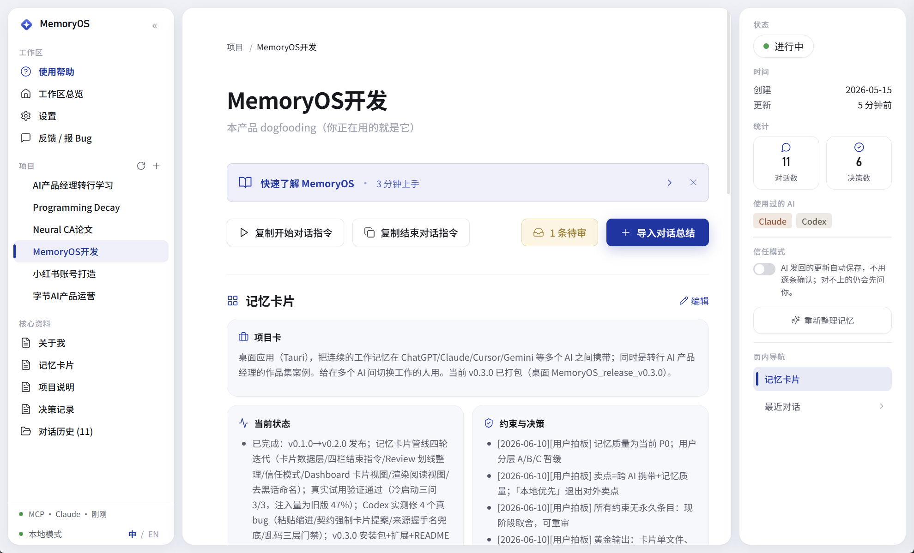

MemoryOS
整合多个 AI 的记忆，无痛切换。一个 Windows 桌面应用：每个项目的工作记忆整理成一页记忆卡片，换一个 AI，30 秒接上进度。
连续三个月，我用一套 Markdown 文件夹在 ChatGPT、Claude、Cursor、Gemini 之间手动同步上下文。每次开新对话都要重新交代我是谁、上次做到哪。重复久了才意识到，问题不只是复制粘贴麻烦，而是 AI 工具之间缺一层持续的项目记忆。
ChatGPT Memory 记住的是「你是谁」，Claude Projects 只对 Claude 生效，Notion AI 锁在自己的工作区。但没有工具帮你记住「这件事做到哪了、为什么这么决定的」。我把这件事做成了一个桌面 app。
定义一个 AI 工作流问题 → 设计最小可验证闭环 → 交付可运行的桌面 Demo → 基于真实使用反馈持续迭代。This project taught me to: define an AI workflow problem, design the smallest testable loop, ship a working desktop demo, and iterate on real usage feedback.
痛点
3 个月里我每天在 4 个 AI 之间切换，每次开新对话都要先粘一大段「我是谁 / 上次到哪了」，一天要重复好几次。（以下是我个人的使用记录，不是统计数据。）
更深的痛不是粘贴慢，是没有产品帮你记住「这件事做到哪了、为什么这么决定」。ChatGPT Memory 记住「你喜欢简洁回答」，Claude Projects 只对 Claude 生效。它们帮 AI 认识你，但不管跨 AI 的工作进展。
现有工具更多在处理「个人画像」或「单平台记忆」。我想试的是另一件事：把工作进展按项目存在用户自己的电脑上，让不同 AI 都能读到同一份上下文。
市场定位
右上角（跨 AI + 数据在本地）目前还是一个空位。现有产品要么只对一个 AI 生效（ChatGPT Memory），要么绑定平台（Notion AI）。我自己试用下来，跨入口的记忆一致性还没有现成的解决方案。MemoryOS 想落在这个位置：切换 AI 工具时能续上工作，数据始终在自己电脑上。
用户旅程
MemoryOS 面向两类用户，对应两条接入路径。普通用户：在多个 AI 之间切换、要反复交代上下文，但非技术背景，走零配置的复制粘贴。开发者 / 高级用户：愿意装一次 MCP，让 AI 直接读写本地记忆。
两条路，最后都汇到同一个确认页：支持 MCP 的客户端（已实测 Claude Desktop）走下面的主路径，AI 直接读记忆卡片、一条指令把总结写进收件箱，省掉复制粘贴；连不上 MCP 的网页聊天 AI（ChatGPT / Kimi 等）走再下面的手动 5 步。
get_project_memory不用复制粘贴
save_session_handoff总结直接进收件箱（待审）
信任模式可自动入库
网页聊天 AI 连不上本地程序，走手动 5 步复制粘贴，最终进入同一个收件箱：
粘到任意 AI
MemoryOS 不参与
粘到当前 AI
结构化总结
用户决定写入
手动路径是一个用户主动驱动的 5 步循环（MCP 不可用时仍可用）:
-
01
Start
在 MemoryOS 选当前项目 → 点【复制开始对话指令】→ 粘到任意 AI。AI 读取上下文，立刻接着上次往下做。
-
02
Work
正常和 AI 工作, MemoryOS 不参与。
-
03
End
工作差不多了 → 在 MemoryOS 点【复制结束对话指令】→ 选当前在用的 AI (ChatGPT / Claude / Gemini / Grok / Cursor / Codex / DeepSeek / Kimi 或自定义) → 粘到 AI。
-
04
AI 总结
AI 按 MemoryOS 提供的模板，输出本次总结和记忆卡片的新版（固定 Markdown 格式）。
-
05
Review → Save
用户把总结复制回 MemoryOS，点【导入对话总结】，在确认页划线对比新旧内容，确认后保存。

两条路读到的、写回的都是同一样东西：记忆卡片。每个项目一页，五个部分：项目卡（这是什么）、当前状态（到哪了）、约束与决策（定过什么，每条带日期和出处）、上次对话总结、历史档案。全文控制在 1200 字内，因为注入太长，AI 反而会忽略中间的内容。页面上显示的，就是 AI 开场读到的。
不管走哪条路，最后一步都一样：AI 不直接写文件，更新先进收件箱，由用户在确认页里划线对比后入库。这是 MemoryOS 最重要的产品原则：AI 读取与起草，用户确认入库。下一节展开。
系统架构
Gemini / Grok / etc.
-
1. 存储层 INPUT
用户电脑上的 Markdown 文件（
about_me.md+ 每个项目的cards.md记忆卡片 /decisions.md决策档案 /sessions/*历史总结）。不是数据库。拷贝文件夹就是完整备份，任何编辑器都能打开。 -
2. 应用层 SYSTEM LOGIC
Tauri + React + TS。负责：容错解析 / 记忆卡片整理与归档 / 确认页划线对比 / 信任模式 / App 内文件编辑 / 中英双语 / 回收站删除 + Undo / 反馈通道。
-
3. 桥接层 OUTPUT
两条桥并行。复制粘贴支持所有 AI、无需任何配置：把记忆卡片写进剪贴板，粘到任意 AI，输出复制回来确认保存。MCP 让支持的客户端（已实测 Claude Desktop）一次配置后直接读取记忆卡片、并把总结写回。写回先进「待审收件箱」，不绕过用户。换 AI 不用重述上下文，直接接着上次做。

AI 调用边界
| 步骤 | 主导技术 | AI 的位置 |
|---|---|---|
| Storage | 文件系统 | — |
| Start prompt | 模板拼接 | — |
| End prompt | 模板拼接 + 格式契约 | — |
| 对话总结生成 | AI 在用户的 AI 工具里跑 | 第 3 方 AI (ChatGPT/Claude/etc) — 不是 MemoryOS 调用 |
| AI 读取记忆 (MCP) | 本地 stdio MCP server · 只读本地文件 | AI 客户端主动调 list_projects / get_project_memory |
| AI 写回 (MCP) | save_session_handoff → 待审收件箱 | AI 只能把总结暂存，不能直接入库 |
| 记忆卡片更新 | 容错 parser 提取 + 新旧对比 | AI 起草卡片新版并标注过时内容，app 解析并以划线对比呈现 |
| Review & Save | 用户确认（旧划线 / 新高亮）· 信任模式下常规更新自动入库 | AI 的建议单独列出，采纳与否始终由用户决定 |
AI 能通过 MCP 直接读本地记忆，但 MCP server 全程只跑本地 stdio、不开端口、不联网，写回一律先进收件箱。读可以直连，写入经用户确认；信任模式只是把「常规更新」这一档的确认交给了 App 自动执行，AI 的建议仍然要用户亲自采纳。三层都可以离线工作。
连接 AI（MCP）
除复制粘贴外，还有一条 MCP 通道：把 server 打包成 memoryos.mcpb，在 Claude Desktop 里装上、填一个工作区路径，AI 就能直接 list_projects / get_project_memory。反方向写回被刻意做窄：AI 调 save_session_handoff 只能把总结送进待审收件箱，入库要经用户确认。这条「读直连、写经审」的边界，让产品在引入自动化之后依然保持用户对记忆的控制权。
 ⤢
⤢
 ⤢
⤢
 ⤢
⤢
产品视角
不只记住「你是谁」，更记住「做到哪了、为什么这么决定」
每个项目一页卡片，1200 字内；验收标准是一个全新 AI 读完后 30 秒答对三问：我是谁怎么协作 / 项目到哪了 / 这次从哪开始
信任模式是第一个答案：常规更新按项目自动入库，存疑内容仍要确认。接下来在真实使用里观察这道确认被打开的频率
关键决策
现阶段选本地。拷贝文件夹就是完整备份，不需要账号，不依赖任何服务。这是当下的取舍，不是永久承诺；有真实需求时会重新评估。
选复制粘贴。代价：每次多 3 次点击。收益：软件从不读取聊天记录，用户完整控制数据。
选 Markdown。用户随时可以删掉 MemoryOS，用任何编辑器继续。靠"体验更好"留人。
自己用时发现 AI 把它的想法写成了我确认过的决定，存活了好几天。改为：每条决策附日期和出处，AI 建议单独列出，采纳与否由用户定，驳回不再出现。
每个项目就几 KB，问题本质是「怎么让记忆保持现时」，不是「怎么检索」。用户要的是控制感，不是自动化。
AI 标出过时内容 → 确认页划线对比 → 用户确认 → 旧条目移入历史档案。第一页永远只有最新版，但什么都没有真正丢掉。
下一步
路线图
已经走完的三步：先让记忆能保持现时，再让 AI 能直接连上这份记忆，然后把记忆本身整理成一页可验收的卡片。
连接 AI（MCP）+ 记忆收件箱
- MCP server +
memoryos.mcpb，Claude Desktop 装上即用，读写链路已真实跑通 - 所有写回（MCP 暂存 / 手动导入）统一进「待审收件箱」
- 使用帮助新增「AI 连接教程」分栏
记忆卡片 + 信任模式
- 每个项目一页记忆卡片，1200 字内，来源分明，过时内容归档
- 确认页划线对比新旧；AI 建议单独列出，可采纳可驳回
- 信任模式按项目开关：常规更新自动入库，存疑内容仍请用户过目
- 旧项目一条指令升级出第一版卡片
验证与扩展
- 找种子用户真实使用并收集反馈（计划中，规模与时间待定）
- 连接更多 AI 客户端；Mac / Linux 版本；代码签名
验收标准
每个阶段配一个可检验的标准。以下区分了已达成的事实和还未验证的目标。
- 已达成 自己持续使用 1 个月以上；MCP 读写链路在 Claude Desktop 真实跑通；冷启动对照实测通过：一个无背景的新对话只读一页卡片，30 秒内答对三问（我是谁怎么协作 / 项目到哪了 / 这次从哪开始），开场注入量降到原来的一半以下。
- 待验证 种子用户在自己的项目上走完完整一轮，并同样通过三问测试。规模与时间未定，做了会在这里更新。
已知风险
用户可能嫌「确认」这一步麻烦。
MCP 已经省掉了复制粘贴，信任模式又把常规更新的确认交给了 App 自动执行。剩下的确认只发生在内容存疑时。如果用户连这一下都反馈太烦，「用户是最后一道关」这条原则就需要重新评估。
AI 平台可能自己做项目级记忆。
MemoryOS 的价值在「跨所有 AI 共用一份记忆」。即使各家自带了项目记忆，用户仍然需要一个不绑定厂商的统一入口。
继续看下去
- 工作方法 · 用 PRD 驱动开发：我怎么写一份 PRD，让 Claude Code 实现、Codex 复审
- 产品架构：记忆系统四模块（写入 / 更新 / 读取 / 验收）与业务流程闭环，两张图出自 PRD
- 竞品分析 — MemoryOS × mem0 — 亲手使用 mem0 完成三条任务流，和 MemoryOS 做逐项对比
- MArch Thesis — 回到主页继续浏览 Programming Decay / Barking Reach 等其他研究项目
GitHub repo 和下载链接见页面顶部。